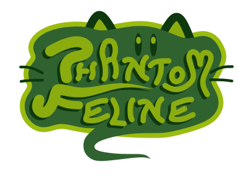
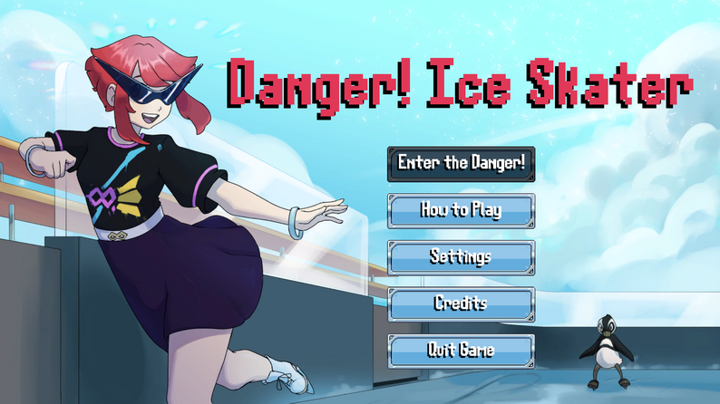
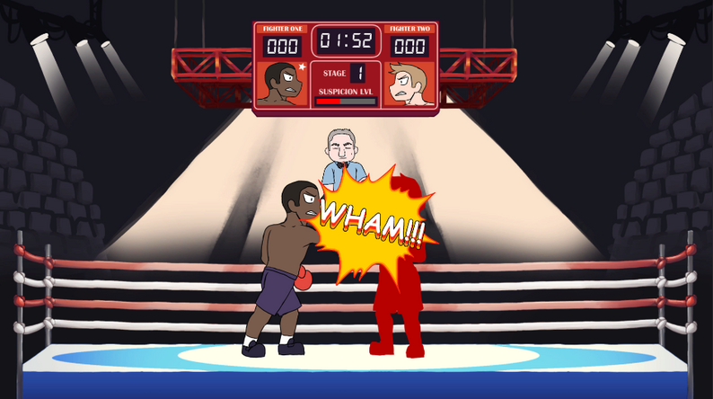
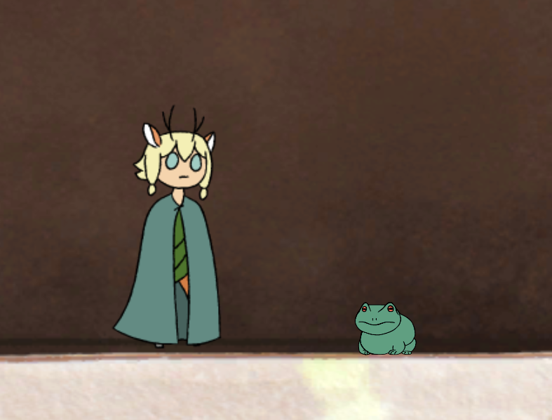
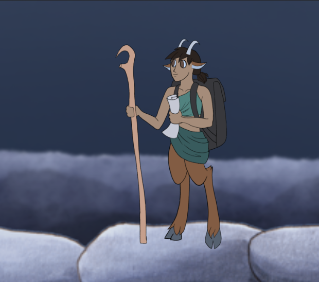
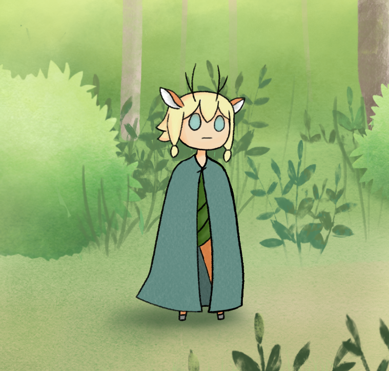

Stealth puzzle game about a ghost cat vs asshole roombas.
Stealth puzzle · Unity · 2025
Phantom Feline is a puzzle game inspired by classic Game Boy titles about controlling light. I made it with some friends from college over the summer and fall of 2025. I spent lots of time attending events, managing playtests and live demos, networking, presenting, showcasing and organizing. I did programming and game design as well. It's on Steam, that was a process I was involved with, launching on Steam. MagFest was huge for us, hundreds of people played in a few days there. Used Unity and C#


LAN co-op · Unity 3D · 2019
I made this game over 2 weeks in highschool with 3 others. I was a programmer and game designer. It's a two player game so you'll need two monitors or two machines. Itch password is durianheist.


Skate circles in the ice to defeat enemies. Play as the titular Ice Skater, dodge relentless enemies, and carve holes in the ice for your foes to fall into. Built for GMTK Game Jam 2025.
GMTK Game Jam 2025 · Unity 3D
Worked with a team over the course of 4 days to make this game for a game jam. A four day long competition, where our game was in the top 8% in terms of enjoyment. We ranked 735 out of 9650 total games made by teams around the world. I contributed programming and gameplay design decisions and some organizational roles. Trying to keep ideas flowing and work happening in a team full of talented artists, programmers and musicians.



Play as a referee trying to rig boxing matches without getting caught. Built during a 48-hour game jam.
GMTK Game Jam 2023 · Unity 2D
I was a programmer and game designer. I made the boxer ai, which uses a state machine and random number generation to make a lifelike boxer fight between the boxing non player characters. They move, punch, and block with random timing, but the numbers are adjusted enough it keeps you on your toes as the referee trying to score, and rig the fight!. Every suspicious call raises the suspicion meter, but you have to rig the fight to win. It was a fun team experience and I loved bringing the game to life with the boxer's behaviour.



A 2D metroidvania made in Unity inspired heavily by Hollow Knight. I worked as a programmer and designer with other UMBC game dev club members.
2021 · Unity 2D
In my freshman year I joined a senior in art and animation who was making a video game for their final project. I was a programmer, game designer, organizer, and presenter. Over the course of the year we made this 2d exploration game as an homage to Hollow Knight and Hoa. So there’s backtracking, secrets, lore, and a bossfight.




An in-person, tabletop-style educational game built for a UMBC astrobiology class — students play through it in place of a final exam.
2021 · Unity 2D
I worked on this game as part of INDS 430 in the fall of 2023 at UMBC. The goal was to make a game for the astrobiology class to replace their final exam, instead they would play this game. Over the course of the semester we talked with the astrobiologists and came up with game mechanics and rules. I helped design some and create content like videos for the game. It was a success and is continued today under the name Mission to Mars, and they are trying to expand to other classes as well.